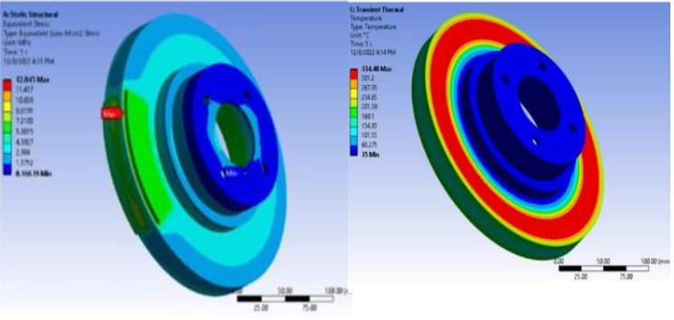
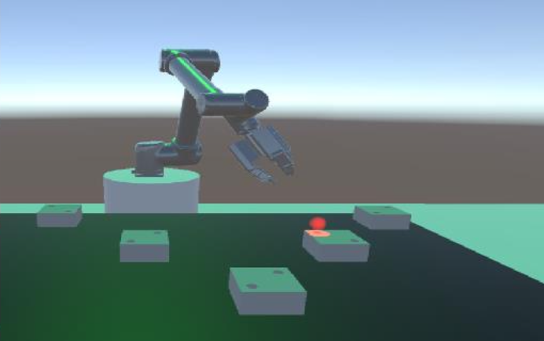
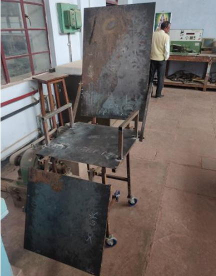
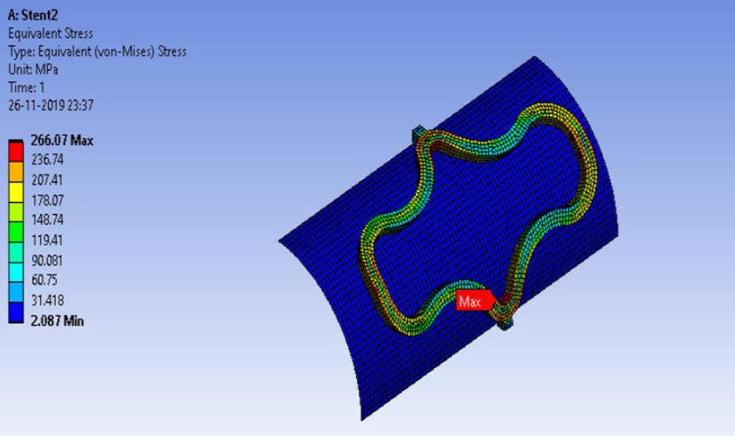

Used ANSYS Design of Experiments and Response Surface methods to optimize brake disc geometry, achieving an 8% volume reduction while maintaining static, thermal, and modal performance within limits.

Developed control algorithms for a drone to execute mid-air flips and deliver a probe to a moving vehicle, simulated in Gazebo with ROS and Pixhawk-4. CAD modelled the drone in SolidWorks, fabricated components via 3D printing and laser cutting, and validated the flip maneuver on the physical hardware.

Built a VR experiment in Unity — connected to ROS and Gazebo — to study how robot intent signaling affects human-robot collaboration. Compared two modalities: HMD-based cues vs. environmental light highlighting, using a simulated screw assembly task.

Designed a convertible wheelchair-stretcher in SolidWorks, developing the conversion mechanism and producing fabrication-ready CAD models. Contributed to FEA analysis and hands-on fabrication including milling, drilling, and welding.

CAD modelled a cardiovascular stent in SolidWorks and performed FEA in ANSYS to simulate balloon angioplasty deployment. Achieved a recoil percentage of 6%, comparable to the benchmark stent design.